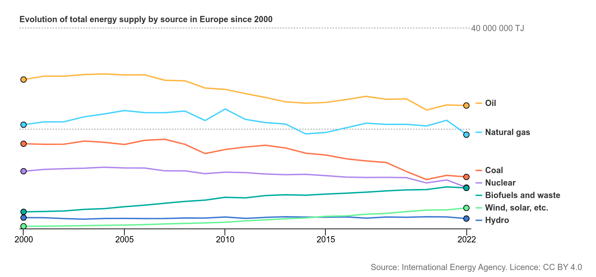
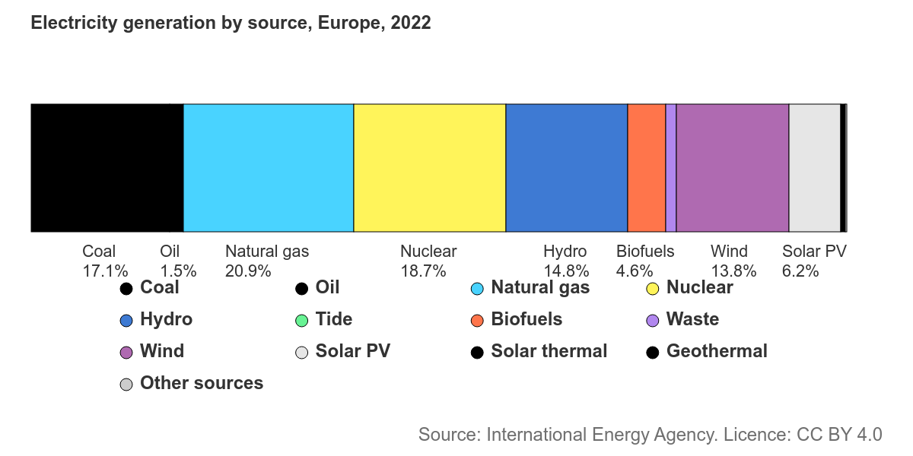
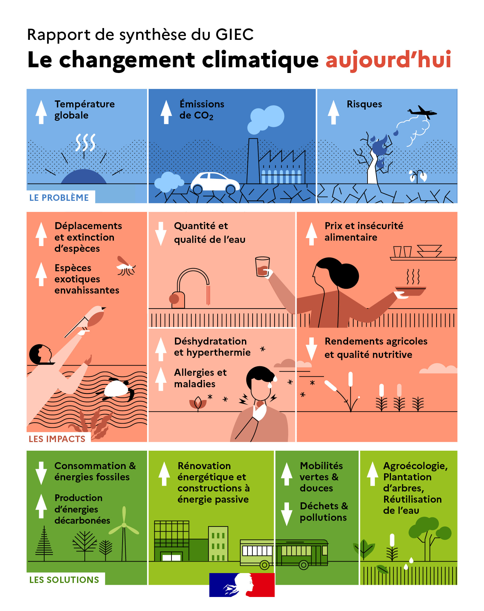

L'Union Européenne en bref
L'UE aujourd'hui
Dates clés
Les piliers de l'UE
L'UE en un coup d'œil
La carte des 27 États membres
Attention ! Bien que j'ai essayé d'être le plus objectif possible et de citer au maximum mes sources, celles-ci peuvent être orientées, les informations biaisées par mes opinions personnelles et mes connaissances personnelles sont limités (je ne suis pas un spécialiste du sujet au contraire je construis cette page pour apprendre). Avec ceci en tête, gardez un certain esprit critique et bonne lecture !
Points clés de la politique environnementale européenne
Cliquez sur un élément pour afficher les détails
Pacte vert européen
Avantages
Défis et limites
Économie circulaire
Avantages
Défis et limites
Stratégie biodiversité 2030
Avantages
Défis et limites
Plan d'action zéro pollution
Avantages
Défis et limites
Transition énergétique
Avantages
Défis et limites
Loi européenne sur le climat
Avantages
Défis et limites
Risques et menaces
Cette section présente les risques majeurs qui pourraient compromettre les objectifs des politiques environnementales européennes.
Lobbying industriel
Influence considérable des groupes industriels sur l'affaiblissement des réglementations environnementales, notamment dans les secteurs des énergies fossiles, automobile et agrochimique. Les lobbies industriels pèsent fortement sur les décisions, comme lors du vote sur la loi de la restauration de la nature ou sur le règlement concernant les pesticides.
En savoir plus sur les lobbies en EuropeGreen bashing
Le « green bashing » désigne un phénomène de dénigrement des politiques et acteurs écologiques par des responsables politiques ou médiatiques, souvent au nom de la défense du pouvoir d'achat ou de l'économie nationale. En Allemagne, les conservateurs de la CDU/CSU ont qualifié les Verts de "matériau usagé" et les ont accusés de "détruire l'économie". En France, le Rassemblement national s'oppose au pacte vert qu'il considère comme problématique pour la croissance du pays. Aux Pays-Bas, la droite populiste rejette de nouvelles taxes carbone et défend l'agriculture intensive contre les normes écologiques.
Article sur l'opposition de la volonté de l'extrême droite de détruire le pacte vertApplication insuffisante
Écart important entre les ambitions affichées et la mise en œuvre réelle des politiques, avec un faible taux de respect des directives dans plusieurs États membres.
Lire la suiteRisques pour le Pacte vert européen
L'interdiction de vente des véhicules thermiques neufs d'ici 2035 est particulièrement menacée: le Parlement français (majorité RN) a voté en février 2025 contre cette date, l'Italie sous Meloni revendique une révision du Green Deal, et les populistes néerlandais proposaient initialement de sortir de l'Accord de Paris. Une coalition ponctuelle droite/extrême droite au PE pourrait "mettre en péril" la transition écologique européenne.
Analyse des risques pour le climatConclusion
Le Pacte vert européen a déjà produit des avancées tangibles, notamment dans les filières énergie et transports : en 2024, les énergies renouvelables ont représenté 45 % de l'électricité européenne, tandis que les ventes de véhicules zéro-émission ont bondi de 24 % au premier trimestre, contribuant à une baisse continue des émissions de CO₂ depuis 1990. Toutefois, l'essor des droites nationalistes et populistes au Parlement européen pèse sur le calendrier du Green Deal : si un démantèlement complet reste peu probable, plusieurs gouvernements et groupes (notamment PPE et ECR) cherchent déjà à renégocier l'interdiction des voitures thermiques en 2035 et d'autres normes, mettant en péril la stabilité de l'ambition climatique européenne.
Pour préserver la trajectoire verte, certaines possibilités sont d'allier justice sociale et compétitivité : compenser les ménages modestes via des aides à l'achat de véhicules propres et à l'isolation ; investir massivement dans les renouvelables, les infrastructures de recharge et les technologies propres pour créer des emplois « verts » ; et renforcer un « Green Deal industriel » (batteries, hydrogène vert, ajustement carbone aux frontières) pour démontrer que la décarbonation stimule la croissance. Sur le plan politique, élargir les alliances — en convainquant des modérés du PPE et de Renew Europe que l'écologie rime avec relance économique — sera crucial : comme le montre une étude du Centre Jacques Delors, la majorité des citoyens soutient les investissements verts et accepte même des mesures impopulaires (taxe CO₂, régulations) dès lors qu'elles incluent des compensations sociales, et seule une rhétorique misant sur une « minorité d'obstructeurs » risquerait de provoquer un « climat de fatigue » face à l'écologie.
L'agriculture en Europe

"Cultiver notre souveraineté, c'est semer notre avenir."
L'agriculture reste un pilier majeur de l'identité européenne, à la croisée des enjeux de souveraineté, de biodiversité et de justice sociale. Cette section explore la situation actuelle, les spécificités françaises et les perspectives d'avenir.
Dates clés de l'agriculture européenne
Lancement officiel de la Politique Agricole Commune (PAC)
Réforme de la PAC intégrant les enjeux environnementaux
Découplage des aides agricoles et de la production. Source.
Nouvelle PAC : éco-régimes et conditionnalités sociales

Rencontre ministères de l'agriculture lithuanien et français
Institutions européennes & impact agricole
Commission européenne
Propose les lois européennes, dont celles qui régissent la PAC. Elle joue un rôle moteur dans les réformes et l’orientation des aides agricoles via ses directions générales (DG AGRI).
Rôle exécutif — propose, pilote et met en œuvre les règlements agricoles.
Parlement européen
Vote les lois agricoles en co-décision avec le Conseil. Il exerce un contrôle démocratique et peut influer sur les orientations agricoles à travers les commissions parlementaires (AGRI).
Pouvoir législatif — amende et valide les textes proposés par la Commission.
Conseil de l'Union européenne
Réunit les ministres de l’agriculture des États membres pour adopter les lois européennes agricoles avec le Parlement.
Pouvoir de décision — adopte la PAC avec le Parlement.
Cour de justice de l’UE
Veille à l'application correcte du droit agricole européen. Elle peut sanctionner un État qui ne respecte pas les règlements PAC.
Pouvoir judiciaire — contrôle du respect des lois agricoles européennes.
État des lieux de l'agriculture européenne
L'Europe dispose d'une agriculture diversifiée mais confrontée à une baisse du taux d'auto-approvisionnement. Les politiques agricoles communes (PAC) et la compétition mondiale rendent certains produits moins rentables localement, ce qui accentue les déséquilibres d'import/export.
Contenu - illustration à venir (évolution du taux d'auto-approvisionnement).
Perspectives futures
Les projections indiquent une hausse des dépendances en matière d'engrais (importés à 80%) et d'alimentation animale (fortement dépendante du Brésil et de l'Argentine). Toutefois, les circuits courts et une consommation plus sobre pourraient infléchir cette trajectoire.
Contenu - illustration à venir (graphiques sur dépendances et alternatives).
La France, puissance agricole
Avec la plus grande surface agricole de l'Union européenne, la France pourrait théoriquement assurer sa propre sécurité alimentaire. Chaque habitant dispose en moyenne de 4 300 m² agricoles, ce qui est supérieur aux 4 000 m² estimés nécessaires. Sur 30 produits majeurs analysés, 17 sont en surproduction, mais seuls 7 dépassent les 85 % d'autosuffisance une fois les exportations déduites.
La dépendance est particulièrement marquée pour les engrais et l'alimentation animale, en provenance notamment du Brésil et d'Argentine. Des efforts vers plus de transformation locale, de consommation responsable et de circuits courts sont en cours.
Contenu - illustration à venir (graphiques, carte de la production nationale).
L'énergie en Europe
Dates clés des politiques énergétiques
Création de la CECA – mise en commun du charbon et de l’acier pour garantir la paix en Europe.
Traité Euratom – coopération nucléaire pour un usage pacifique de l’énergie.
Paquet climat-énergie – triple objectif : réduire les émissions, améliorer l’efficacité, développer les renouvelables.
Green Deal européen – feuille de route vers la neutralité carbone.
Mix énergétique européen
Le mix énergétique européen se compose historiquement d'énergies fossiles, nucléaires et renouvelables. Les proportions évoluent avec les politiques climatiques et les contextes géopolitiques.
 Focus : Le nucléaire en Europe
Ici explication sur le fonctionnement d'une centrale nucléaire avec schéma interactif à venir.
Ici tableau ou cartes des avantages et inconvénients du nucléaire.
Ici contenu sur la sécurité nucléaire, incidents historiques et mesures en place.
Ici infographies avec les chiffres clés en France et dans l’Union européenne.
Transitions & controverses
Réduction de la dépendance et investissements
Après l'invasion de l’Ukraine par la Russie en février 2022, l’UE a fait chuter sa part de gaz russe dans ses importations de 45 % (2021) à 15 % (2023). En parallèle, les investissements dans les énergies renouvelables ont atteint 110 milliards € en 2023, soutenus par la Banque européenne d’investissement.
En savoir plusDans le sud de l’Estonie, l’ancien site de récolte de tourbe de Sopi-Tootsi accueillera bientôt le plus grand parc éolien des pays baltes, capable d’alimenter près de 197 000 foyers, soit environ 10 % des besoins en électricité du pays.
Ce projet, mené par Enefit Green, illustre l’engagement croissant des États membres vers une production énergétique locale, propre et indépendante. L’Estonie vise à produire 100 % de son électricité à partir de sources renouvelables d’ici 2030.
Disparités par pays
Les choix nationaux diffèrent fortement : l’Allemagne, sortie du nucléaire, dépend encore du charbon pour 25 % de son électricité, alors que la France produit 70 % de son électricité grâce au nucléaire. La Pologne reste à plus de 70 % au charbon, tandis que le Danemark atteint 50 % d’éolien offshore et l’Espagne plus de 30 % de solaire photovoltaïque.
En savoir plusLe Bhoutan et le Costa Rica
Le Bhoutan est le premier pays à bilan carbone négatif grâce à son hydroélectricité (98 %) et ses forêts, tandis que le Costa Rica produit près de 100 % de son électricité à partir de sources renouvelables (hydro, géothermie, éolien).
En savoir plus sur le BhutanEn savoir plus sur le Costa Rica
Répartition des énergies et des émissions en Europe
En Europe, la transition énergétique est un enjeu majeur pour atteindre la neutralité carbone d'ici 2050. Les émissions de gaz à effet de serre sont liées aux sources d’énergie dominantes. Voici une synthèse claire des secteurs clés et des leviers de réduction. Pour des infos précises sur la France, on voit la répartition des émissions par secteurs dans ce rapport.
Électricité & Chaleur (≈ 33 %)
Sources : Gaz (17 %), charbon (11,7 %), pétrole (1,4 %), renouvelables (45,4 %), nucléaire (22,8 %). (plus de détails)Pistes d'amélioration : Déploiement solaire/éolien, sortie du charbon, stockage (batteries, hydrogène), modernisation des réseaux.
Transport (≈ 29,4 %)
Sources : Pétrole (majoritaire), électricité (VE en croissance).
Pistes d'amélioration : Véhicules zéro émission, transports collectifs, biocarburants durables, fret ferroviaire.
Industrie (≈ 21 %)
Sources : Gaz, charbon, électricité (sidérurgie, chimie, ciment).
Pistes d'amélioration : Fours électriques, hydrogène vert, captage CO₂, recyclage (aluminium, etc.).
Bâtiments (≈ 16 %)
Sources : Gaz, fioul, électricité, biomasse.
Pistes d'amélioration : Isolation thermique, pompes à chaleur, réseaux de chaleur, sensibilisation des usagers.
Agriculture (≈ 8 %)
Sources : Méthane (élevage), protoxyde d’azote (engrais), carburants fossiles.
Pistes d'amélioration : Agriculture de précision, méthanisation, protéines alternatives, agroécologie.
Stratégies transversales
Tarification carbone (ETS), plan REPowerEU (300 Md€), interconnexions électriques, innovation et coopération UE.
Sources : Consilium, mentionné plus haut, Agence internationale de l'énergie informations sur les émissions par secteurs
Il est important de noter qu'une autre source, issue de l'Agence européenne pour l'environnement, donne des données différentes pour la répartition des émissions de gaz à effet de serre en Europe.
Selon cette source, l’approvisionnement en énergie était responsable de 27,4 % des émissions, le transport domestique de 23,8 %, l’industrie de 20,3 %, les activités résidentielles et commerciales de 11,9 %, et l’agriculture de 10,8 %.
Cliquez ici pour plus de détails .
Ces différences peuvent être dues à la définition des différents secteurs, aux méthodologies de calcul, aux années de référence, ou aux sources de données utilisées.
Perspectives d'avenir
L'Union européenne vise la neutralité carbone d'ici 2050. Pour cela, plusieurs leviers sont envisagés : déploiement de petits réacteurs nucléaires (SMR), développement de réseaux électriques intelligents, stockage à grande échelle, généralisation de l'autoconsommation.
L'hydrogène est également perçu comme un vecteur clé, notamment dans les secteurs difficilement électrifiables comme l'industrie lourde ou le transport aérien. Le citoyen devient acteur via la sobriété énergétique, l'autoproduction et les coopératives locales.
Une transition à inventer collectivement
Face à l'urgence climatique et à l'épuisement des ressources, la transition écologique n'est pas une option, mais une nécessité. Cette transition ne sera réussie que si elle est pensée collectivement, à toutes les échelles.
Les institutions fixent un cap, mais les territoires, les entreprises, les associations, les citoyens en seront les moteurs. Cela implique des choix technologiques, mais aussi culturels et politiques. L’échelle locale est un terrain privilégié d’expérimentation : coopératives d’énergie, tiers-lieux, jardins partagés ou transports doux montrent qu’un autre modèle est possible.
En somme, l’avenir est à co-construire. Il ne s'agit pas seulement d'innover techniquement, mais de réinventer notre rapport au vivant, à la consommation, au collectif.
Les leviers technologiques : des solutions prometteuses mais à encadrer
1. Les petits réacteurs nucléaires modulaires (SMR)
Les SMR sont des réacteurs nucléaires de faible puissance (jusqu’à 300 MW) conçus pour être plus sûrs, modulaires et rapides à déployer que les centrales traditionnelles. La France, la Pologne et plusieurs autres pays européens s’intéressent à ces technologies pour décarboner leur mix énergétique tout en assurant une production stable.
💡 Source : Agence internationale de l’énergie (AIE), rapport 2022 sur le nucléaire civil.
Cependant, le déploiement de ces réacteurs pose des questions sur les déchets, la prolifération, et la dépendance technologique. Ils doivent être intégrés dans une stratégie énergétique globale comprenant sobriété, efficacité, et développement des renouvelables.
2. Les réseaux électriques intelligents (smart grids)
Les réseaux intelligents permettent de mieux intégrer les énergies renouvelables intermittentes (éolien, solaire) dans le système électrique en temps réel. Ils facilitent aussi l’implication des consommateurs via la gestion dynamique de la demande (smart meters, flexibilité).
💡 Source : Commission européenne, appui à la transformation numérique et écologique du système énergetique.
Ces infrastructures, combinées au stockage (batteries, hydrogène), peuvent transformer les territoires européens en écosystèmes énergétiques résilients et bas-carbone.
Changer de paradigme : l’innovation sociale et la gouvernance
3. Économie régénérative et économie du donut
L’Europe doit aller au-delà de la croissance verte vers des modèles inspirés de l’économie régénérative et de l’économie du donut (Kate Raworth). Il s’agit de maintenir les activités humaines à l’intérieur d’un espace sûr pour l’humanité, entre limites planétaires et besoins sociaux.
💡 Source : Kate Raworth, Doughnut Economics, 2017.
Cela implique de repenser l’indicateur de prospérité (au-delà du PIB), promouvoir des politiques publiques favorables à l’économie circulaire, aux communs, et à la résilience locale.
4. Justice climatique et démocratie environnementale
Le rapport Our Planet, Our Future insiste sur le rôle fondamental de la justice sociale pour la transition écologique. En Europe, les inégalités d’exposition aux risques environnementaux doivent être prises en compte dans les politiques climatiques. Cela signifie renforcer :
- la participation citoyenne aux décisions (assemblées citoyennes pour le climat) ;
- l’éducation à l’environnement, dès l’école ;
- des transitions justes, accompagnant les travailleurs des secteurs fossiles vers de nouveaux métiers durables.
Des exemples concrets d’initiatives européennes
Le Pacte vert pour l’Europe (Green Deal) vise la neutralité carbone d’ici 2050. Il finance des projets de rénovation thermique, de mobilité douce, de production décarbonée.
Le programme Horizon Europe soutient la recherche sur les SMR, le stockage d’énergie, l’agroécologie, etc.
Les territoires en transition, comme la région de Fribourg (Allemagne) ou Leuven (Belgique), montrent que des alternatives locales, démocratiques et durables sont possibles.
Conclusion : une bifurcation collective
L’Europe possède les ressources, les connaissances et les structures démocratiques pour devenir un leader de la transition écologique mondiale. Mais cela nécessite :
- une volonté politique ferme ;
- des investissements publics massifs ;
- une mobilisation citoyenne continue ;
- un changement culturel profond valorisant le “bien vivre” plutôt que le “toujours plus”.
Comme le dit le rapport, “Les actions que nous faire aujourd'hui vont déterminer le monde dans lequel nous vivrons dans 10, 20 ou 50 ans.” : il est encore temps d’agir.
Plus d'informations voir le rapport de la commission européenne très bien illustré et synthétique
L'Europe dans le Monde
L’Europe représente environ 8 % de la population mondiale, mais sa consommation énergétique par habitant reste relativement élevée par rapport à la moyenne mondiale, bien que plus faible que celle des États-Unis ou du Canada.
Sur le plan de la production, l’Europe est dépendante de nombreuses importations : gaz russe, uranium canadien, pétrole du Moyen-Orient. Elle investit cependant massivement dans les énergies renouvelables.
En termes de pollution, l’UE a significativement réduit ses émissions de CO₂ depuis 1990, contrairement à d'autres régions du monde où elles continuent d'augmenter (ex. : Asie du Sud-Est).
Comparaison et étude de cas : où en est réellement l’Europe ?
Comme on l’a vu dans la partie "Transitions & controverses" et dans les points clés de la politique environnementale plus haut, l’Europe réduit ses émissions de gaz à effet de serre et entreprend des actions concrètes en ce sens.
Le bilan est cependant à nuancer : l’Allemagne, première économie de l’UE, illustre bien à la fois les succès et les limites de la transition énergétique européenne.
Étude de cas : l’Allemagne
- Sortie du nucléaire après Fukushima, compensée temporairement par le charbon.
- Forte croissance des énergies renouvelables, mais dépendance persistante aux importations.
- Objectifs climatiques ambitieux, mais émissions encore élevées par habitant.
Une empreinte écologique réelle souvent sous-estimée
En intégrant les émissions importées (liées à la production de biens consommés en Europe mais fabriqués ailleurs), l’empreinte carbone réelle de l’UE est bien plus élevée qu’indiqué dans ses bilans officiels.
Indices de performance environnementale
L’Europe figure généralement en bonne position dans les classements internationaux (ex. : Climate Change Performance Index), grâce à ses politiques environnementales, mais des disparités internes demeurent.
Comparaisons internationales
Comparée aux grandes puissances émergentes comme la Chine ou l’Inde, l’UE reste un bon élève, mais la pression démographique et industrielle est bien moindre. La situation mondiale montre que les efforts européens, bien que significatifs, restent insuffisants à l’échelle globale.
Le pouvoir législatif de l'Union Européenne
Depuis les années 1950, l'Union européenne a progressivement consolidé son pouvoir législatif. Des traités fondateurs comme le traité de Paris (1951) et le traité de Rome (1957) ont jeté les bases de la coopération économique, tandis que le traité de Maastricht (1992) a marqué une étape cruciale en instituant l'UE et en élargissant ses compétences législatives.
Cliquez sur les icônes ci-dessous pour découvrir différents aspects du pouvoir législatif européen.
La construction du pouvoir législatif européen
L'histoire du pouvoir législatif européen débute avec les traités fondateurs des années 1950, notamment le traité de Paris (1951) créant la Communauté européenne du charbon et de l'acier, et le traité de Rome (1957) établissant la Communauté économique européenne.
Le traité de Maastricht (1992) a constitué un tournant majeur en instituant officiellement l'Union européenne et en élargissant considérablement ses compétences législatives, notamment dans la création du marché unique et l'harmonisation des normes entre les États membres.
Les traités ultérieurs comme le traité d'Amsterdam (1997), le traité de Nice (2001) et le traité de Lisbonne (2007) ont progressivement renforcé les pouvoirs du Parlement européen et restructuré le processus décisionnel, consolidant ainsi le pouvoir législatif de l'UE.
L'« Effet Bruxelles » : une puissance normative globale
Le concept d'« effet Bruxelles », introduit par la professeure Anu Bradford, décrit la capacité unique de l'Union européenne à exporter ses normes et régulations au-delà de ses frontières, façonnant ainsi les pratiques commerciales et les standards à l'échelle mondiale.
Grâce à l'attrait de son vaste marché de plus de 450 millions de consommateurs et à la rigueur de ses réglementations, l'UE incite les entreprises internationales à adopter ses standards pour accéder à ce marché lucratif, influençant ainsi les pratiques commerciales dans le monde entier.
Cette influence réglementaire transforme l'UE en une véritable puissance normative mondiale, capable d'exercer son pouvoir sans recourir à des moyens militaires traditionnels, démontrant ainsi l'efficacité de la "puissance douce" (soft power) dans les relations internationales modernes.
Exemples concrets d'influence réglementaire
Protection des données : Le Règlement général sur la protection des données (RGPD) de 2018 a établi des normes strictes en matière de confidentialité et de protection des données personnelles, poussant des géants technologiques comme Facebook, Google et Apple à aligner leurs politiques mondiales sur ces exigences européennes.
Sécurité des produits : Des réglementations comme REACH (enregistrement, évaluation et autorisation des substances chimiques) ont conduit des fabricants internationaux à modifier la composition de leurs produits pour se conformer aux normes européennes, affectant ainsi la production mondiale et les chaînes d'approvisionnement.
Technologie et économie numérique : Les récentes directives sur les marchés numériques (DMA) et les services numériques (DSA) imposent des obligations significatives aux géants de la technologie, influençant leurs opérations et leurs modèles commerciaux bien au-delà des frontières européennes.
Les critiques et défis de l'approche réglementaire
Impérialisme réglementaire : Certains critiques estiment que l'UE impose ses normes sans considération suffisante pour les spécificités locales et les contextes économiques différents des autres pays, créant ainsi une forme d'impérialisme réglementaire.
Frein à l'innovation : Des voix, notamment dans le secteur technologique, suggèrent que des réglementations trop strictes pourraient entraver l'innovation et la compétitivité des entreprises, limitant ainsi le développement économique et technologique.
Protectionnisme déguisé : Il est parfois reproché à l'UE d'utiliser ses normes comme une forme de protectionnisme déguisé, visant à protéger ses industries locales au détriment des concurrents étrangers, ce qui pourrait nuire aux relations commerciales internationales.
Cliquez sur un aspect pour découvrir plus d'informations sur le pouvoir législatif de l'UE
L'Union européenne, bien que n'étant pas une superpuissance militaire traditionnelle, exerce une influence mondiale significative grâce à son pouvoir législatif et réglementaire. En établissant des normes élevées dans divers domaines, elle façonne les pratiques mondiales et démontre que la régulation peut être un outil puissant de politique internationale. Cette "puissance par la loi" constitue l'une des contributions les plus distinctives de l'UE à la gouvernance mondiale.
Pour approfondir ce sujet, vous pouvez consulter l'ouvrage d'Anu Bradford, The Brussels Effect: How the European Union Rules the World, qui explore en détail ce phénomène d'influence réglementaire mondiale. Je me suis notamment inspiré de cette vidéo The world's unexpected true superpower